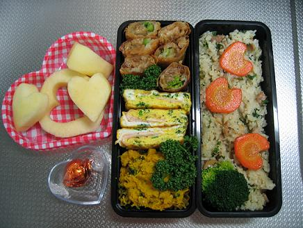

本日はバレンタインデーです。
オットの会社ではチョコの受け渡しが全面的に禁止されているので、私がオットがもらったチョコの
おこぼれにあずかることもなく、ホワイトデー用にお返しを買ってオットに持たせるということもなく、
結婚してからは何とも味気ないバレンタインを過ごしています。
ちなみにオットにスーパーの美味しくないチョコをあげるのもどうかと思い、
去年は桜餅を買って夕飯の後に二人で食べましたが、
今年は少し頑張ってお弁当をバレンタイン仕様にしてみました。
右から
洋風炊き込みご飯（ハート型の人参付き）
グラタン春巻き、ハムとチーズの玉子焼き、かぼちゃサラダ
デザートのリンゴ（ハート型）、チョコレート
です。
|

|
ちなみにこのお弁当、下ごしらえだけで２時間もかかってしまいました。
当分の間はこんなに手の込んだお弁当を作ることはないと思います。
思えば独身の頃は、前もって大量のチョコを買ってバレンタイン当日に会社に持って行っていました。
そのチョコを意中の男性に配りまくる。のではなく、下請け会社の方に配りまくっていました。
会社の構造上、私は人を使う立場にあり、使われる下請け会社の方は私より年上（っつーか、オジサン）で、
男性ばかりでした。
オジサン方からしてみると仕事とは言え、「（私のような）小娘にいいように使われるなんて・・・」
と思う気持ちがあったでしょうし、私にしても年上のオジサンに指示するのは時として非常にやり難いものがありました。
そこで思いついたのが「バレンタインにチョコを配りまくる作戦」です。
昼休みにオジサンの席までチョコを持参し、「いつもお世話になりましてありがとうございます♪」と
満面の笑みでチョコを渡すのですが、これが効果絶大でしたね。１００％義理チョコだとわかっていても
嫌な顔をするオジサンは一人もいませんでした。
こんな感じで半ば反則ワザのようなことをしていたのですが、チョコの一つや二つ渡すだけで
その後の業務で多少の無理を聞いてくれたり融通を利かしてくれたりするのですから、
本当に安いものだったと思います。
ちなみに、チョコをもらってもお返しを渡さない人がたまにいますよね（我が家のオット等）。
たとえ義理チョコでも女性は誰にチョコをあげたのか記憶しているものですので、
できればホワイトデーにささやかなお返しをすることをオススメしたいです。
（「勘違いされそう」等の事情がある場合を除き）
さて、本日は昼過ぎから雨・風が強くなってきました。嵐のようです。
今日は家に閉じこもって嵐見物をすることにします。